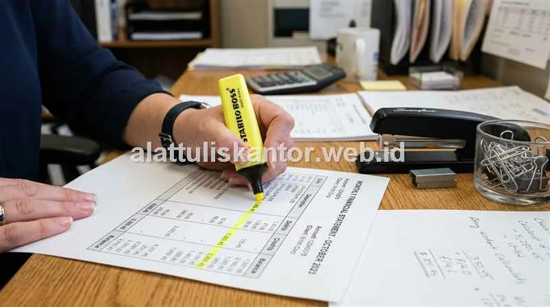

Dokumen arsip pajak tahunan yang wajib disimpan minimal 10 tahun sesuai ketentuan peraturan perpajakan nasional seharusnya menjadi aset perusahaan yang terlindungi secara aman, bukan justru berisiko rusak akibat kualitas folder penyimpanan yang cepat lapuk. Sayangnya, banyak divisi keuangan baru menyadari masalah ini saat dokumen sudah dibutuhkan kembali untuk keperluan audit internal atau pemeriksaan kepatuhan kantor pajak (DJP).
Ketika diperiksa, folder karton biasa sering ditemukan sudah rapuh, sobek di bagian ring mekanik, berkarat, atau warna kertas menguning parah (*foxing*) hingga tulisannya tidak terbaca. Memilih paket atk kantor dengan spesifikasi bahan arsip bermutu tinggi adalah investasi kecil yang jauh lebih murah dibanding risiko kerugian akibat hilangnya bukti transaksi sah di masa mendatang.
Sebagai supplier atk-kantor yang berpengalaman memasok perlengkapan arsip legal dan keuangan korporat, kami merangkum standar pemilihan bahan folder, kertas, dan kotak arsip yang teruji tahan hingga lebih dari satu dekade.
1. Mengapa Folder Arsip Bisa Cepat Lapuk dan Bagaimana Mencegahnya?
Folder arsip cepat lapuk umumnya disebabkan oleh penggunaan karton daur ulang berkualitas rendah yang menyerap kelembapan udara tropis dan rentan mengalami degradasi kimiawi saat disimpan bertahun-tahun di gudang kantor.
Solusi teknis paling tepat adalah beralih menggunakan ordner atau folder berbahan PVC laminasi atau *hardboard* padat dengan ketebalan minimal 2 mm yang dirancang kedap air dan tahan perubahan cuaca, bukan map karton tipis biasa yang diperuntukkan bagi dokumen harian jangka pendek.
Standar Retensi UU Perpajakan: Pasal 28 UU KUP mewajibkan buku, catatan, dan dokumen bukti transaksi disimpan selama 10 tahun di Indonesia. Folder PVC laminasi dan kertas acid-free adalah standar wajib untuk memenuhi kepatuhan regulasi ini.
2. 4 Jenis Kerusakan Umum pada Arsip Dokumen Pajak Jangka Panjang
- Ring Binder Logam Berkarat atau Patah: Logam murahan tanpa lapisan antikarat akan berkarat akibat kelembapan ruangan, menularkan noda karat ke lubang kertas dan merobek lembaran saat dibalik.
- Kertas Menguning dan Menjadi Rapuh (*Foxing*): Kertas HVS biasa dengan kandungan asam (*acidic*) tinggi akan mengalami oksidasi, berubah kecokelatan, dan rapuh hanya dalam waktu 3–5 tahun.
- Sudut Lipatan Folder Robek: Gesekan berulang saat folder ditarik dan dimasukkan ke rak arsip besi membuat sudut karton cepat terkelupas bila tidak dilapisi penguat logam (*metal corner protector*).
- Serangan Jamur, Rayap, dan Kutu Kertas: Serat kayu terbuka pada map murah menjadi sumber makanan bagi serangga gudang jika diletakkan di ruang penyimpanan dengan sirkulasi udara terbatas.
3. Tabel Perbandingan Kualitas Bahan Folder Arsip Dokumen
| Jenis Bahan Folder | Tingkat Ketahanan | Peruntukan Ideal | Estimasi Masa Pakai |
|---|---|---|---|
| Karton Tipis Biasa | Rendah (Mudah lapuk) | Arsip sementara harian (< 1 tahun) | 1 – 2 tahun |
| Board Tebal (2.0 mm) | Sedang – Tinggi | Arsip operasional jangka menengah | 3 – 5 tahun |
| PVC Laminasi Premium | Tinggi (Tahan lembap & air) | Arsip pajak, SPT tahunan, kontrak legal | 7 – 10+ tahun |
| Box Arsip Polypropylene Kedap | Sangat Tinggi | Penyimpanan gudang sentral jangka panjang | 10 – 15+ tahun |
4. Daftar ATK Divisi Keuangan yang Wajib Tersedia untuk Arsip Akhir Bulan
Untuk memastikan dokumen closing bulan berjalan tersimpan aman hingga 10 tahun ke depan, divisi keuangan wajib melengkapi persediaan berikut:
- Ordner PVC Laminasi Ring Besi Antikarat: Dilengkapi kantong label punggung bening untuk kodefikasi tahun pajak dan nomor berkas.
- Kertas HVS Bebas Asam (*Acid-Free Paper*): Khusus untuk mencetak lembar rekapitulasi audit final dan dokumen legal berumur panjang.
- Label Folder Tahan Air & Tinta Anti-Luntur: Agar penamaan kategori tetap terbaca jelas tanpa memudar meski disimpan bertahun-tahun di rak.
- Box Arsip Karton Kraft Tebal / Box Plastik Berpenutup Rapat: Melindungi deretan ordner dari debu gudang dan paparan cahaya langsung.
- Silica Gel Desiccant Khusus Lemari Arsip: Menyerap uap air berlebih di dalam lemari berkas tertutup untuk mencegah tumbuhnya jamur.
5. Cara Merawat Arsip Dokumen Pajak agar Tahan Lebih dari 10 Tahun
- Simpan di Rak Tertutup Berjarak dari Lantai: Jangan meletakkan kardus arsip langsung di lantai semen. Gunakan rak besi tertutup dengan jarak minimal 15 cm dari lantai dan dinding.
- Hindari Menumpuk Ordner Terlalu Tinggi: Tekanan beban berat akan mematahkan ring mekanik di bagian bawah dan melipat pinggiran dokumen.
- Kontrol Kelembapan Ruang Arsip (< 60% RH): Pasang thermo-hygrometer di ruang arsip dan nyalakan dehumidifier bila ruangan terasa lembap saat musim hujan.
- Lakukan Audit Fisik Berkala Setiap Tahun: Periksa kondisi fisik berkas saat pelaporan SPT tahunan untuk mendeteksi dini tanda-tanda kerusakan sebelum kertas hancur.
6. Mengapa Investasi Bahan Arsip Berkualitas Lebih Murah Dibanding Risikonya?
Selisih harga antara ordner karton biasa dan ordner berbahan PVC laminasi premium hanya berkisar antara Rp 5.000 hingga Rp 10.000 per unit. Namun, denda sanksi perpajakan akibat ketidakmampuan menunjukkan bukti transaksi otentik saat pemeriksaan pajak bisa mencapai puluhan hingga ratusan juta rupiah.
Studi Kasus: Dokumen Pajak Rusak yang Berujung Sanksi Administratif
Sebuah perusahaan manufaktur suku cadang di Cikarang pernah mengalami kendala serius saat menjalani pemeriksaan pajak tahun buku 5 tahun sebelumnya. Petugas pemeriksa meminta dokumen fisik bukti potong PPh dan faktur pajak masukan asli.
Saat diambil dari gudang, ordner karton murah yang digunakan sudah lapuk berjamur, ring binder berkarat parah hingga merobek kertas, dan tinta tulisan kuitansi sudah pudar tidak terbaca. Akibat tidak dapat membuktikan keabsahan sebagian kredit pajak fisik, perusahaan dikenakan koreksi fiskal dan denda administratif puluhan juta rupiah.
Langkah Perbaikan: Pasca insiden tersebut, manajemen mewajibkan penggunaan paket ordner PVC laminasi, kertas acid-free, dan box arsip kedap debu untuk seluruh dokumen akuntansi baru, serta menerapkan digitalisasi paralel sebagai cadangan backup.
7. Kombinasi Arsip Fisik dan Digital sebagai Lapisan Perlindungan Ekstra
Meskipun bahan fisik terbaik sudah digunakan, perusahaan modern wajib menerapkan strategi perlindungan ganda (*dual protection*):
- Pemindaian Segera (*Immediate Scanning*): Pindai bukti potong dan kuitansi menjadi file PDF beresolusi tinggi segera setelah diterbitkan.
- Penyimpanan Cloud Terenkripsi: Simpan salinan digital di server awan yang memiliki backup otomatis dan hak akses berjenjang.
- Fisik Asli Tetap Disimpan Rapi: Tetap pelihara dokumen fisik asli di ordner berkualitas, karena hukum pembuktian perpajakan dan pengadilan di Indonesia tetap memprioritaskan wujud fisik dokumen asli bermeterai.
Untuk melihat katalog lengkap perlengkapan ordner PVC, kertas bebas asam, dan paket atk kantor terstandarisasi, silakan kunjungi halaman produk kami.